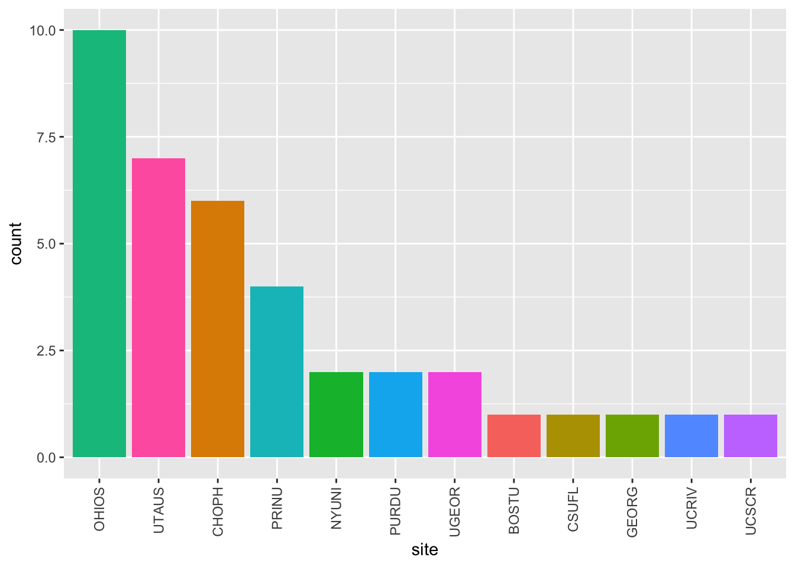

State of PLAY
These files summarize the current state of the project.
0.4 Last month
targets::tar_load(screen_df)
now <- ymd(Sys.Date())
month_ago <- now - dmonths(1)
screen_last_month_df <- screen_df %>%
dplyr::filter(submit_date > month_ago)
n_screens <- dim(screen_last_month_df)[1] There have been 20 recruiting calls since 2022-11-21 13:30:00.
calls_by_site_plot(screen_last_month_df)

Figure 10: Screening calls in last month by site
targets::tar_load(home_visit_df)
home_last_month_df <- home_visit_df %>%
dplyr::filter(date_today > month_ago)
n_home_visits <- dim(home_last_month_df)[1] There have been 23 recruiting calls since 2022-11-21 13:30:00.
Calls/visits ratio: 0.8695652.
calls_by_site_plot(home_last_month_df)
Figure 11: Home visits in last month by site